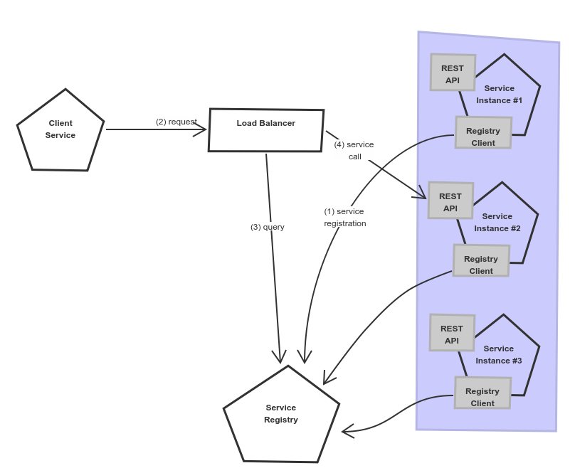
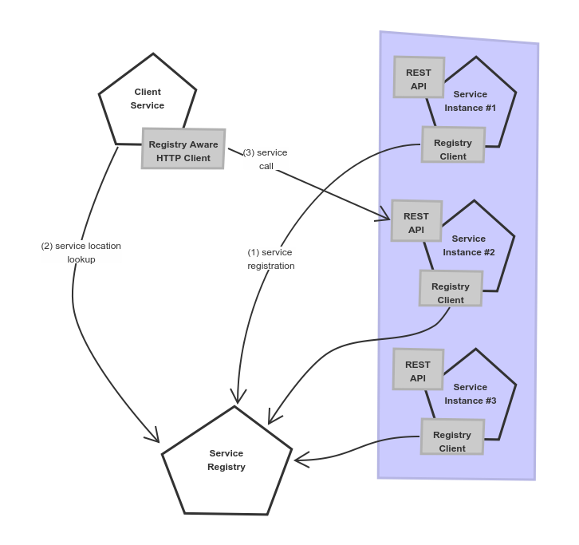
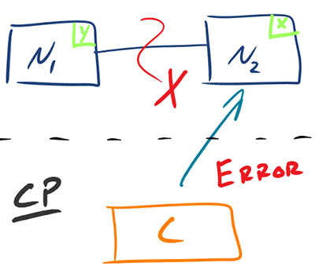

// Exibit A +-------------+ | | | Resources | | service | | | +-------------+ //
Mikroserwisy, wszędzie mikroserwisy
The 5 Why’s of microservices
Mikroserwisy? Dlaczego?
Mikroserwisy? Dlaczego?
Mikroserwisy?
(ง •̀ω•́)ง✧, dlaczego?Mikroserwisy?
●.◉, dlaczego?Mikroserwisy?
༼☯﹏☯༽! Dlaczego?
Software engineer | ||
|---|---|---|
Chief Mob Officer | ||
Jakub Marchwicki <@kubem> | ||
Dlaczego mikroserwisy?
Całkiem prawdopodobna historia, chociaż wszystkie wydarzenia i postacie przedstawione poniżej są fikcyjne.
dnia pierwszego, siedział architekt
w swojej wieży z kości słoniowej
w smutku i niepewności
i architekt rzekł
niech nastaną mikroserwisy
niech nastaną małe usługi
zmieniające się z jednego tylko powodu
niech usługi komunikują się
z wykorzystaniem otwartych interfejsów
i niech wyjście jednego będzie wejściem dla kolejnego
uczyniwszy to architekt dał temu nazwę
nazwał to systemem rozproszonym
i programiści widzieli to
i było to dobre
i tak upłynął wieczór i poranek
(Rodz. 1, 4-13)
Mikroserwisy
Mikroserwisy to koncept architektoniczny który w założeniu ma na celu rozprzęgnięcie rozwiązania poprzez jego dekompozycje funkcjonalną na mniejsze elementy, komunikujące się między sobą poprzez lekkie mechanizmy, często HTTP
— Sam Newman
Mikroserwisy
Niewielki problem biznesowy
Niezależny; niezależnie wdrażany
Działający we własnym procesie
Zarządzający swoimi danymi
Integrujący się z wykorzytaniem powszechnych interfejsów
Monolit to zło - mmkey?
Mikroserwisy są fajne
Czysty kod
Tworzymy moduły które mają pojedynczą odpowiedzialność potencjalnie
Są szybsze niż monolity szybsze do wdrożenia, szybsze w działaniu
Łatwiejsze w zarządzaniu nie wszyscy pracują na pojedynczym code-basie
Łatwiejsze do skalowania tutaj gdzieś powinien pojawić się Docker
Docker, docker, docker, docker
Mikroserwisy są fajne - mmmkey?
(…) collection of task-oriented or dedicated systems that pool their resources and capabilities together to create a new, more complex system which offers more functionality and performance than simply the sum of the constituent systems
System of systems
(…) collection of task-oriented or dedicated systems that pool their resources and capabilities together to create a new, more complex system which offers more functionality and performance than simply the sum of the constituent systems
Co może pójść nie tak?
// Exibit A
+------------------+
+-------------+ | |
| | | Access control |
| Resources | | |
| service | +------------------+
| |
+-------------+
//// Exibit A
+------------------+
+-------------+ | |
| | | Access control |
| Resources | | |
| service | +------------------+
| |
+-------------+
+----------------+
| |
| Users |
| repository |
| |
+----------------+
//// Exibit A
+------------------+
+-------------+ | |
| | | Access control |
| Resources | | |
| service | +------------------+
| |
+-+-----------+
^
|
| +----------------+
| | |
| | Users |
| | repository |
| | |
| +----------------+
(1)
+
//// Exibit A
+------------------+
+-------------+ | |
| | | Access control |
| Resources | | |
| service | +------------------+
| |
+-+-------+---+
^ |
| |
| | +----------------+
| | | |
| | | Users |
| | (2) | repository |
| +-----------> | |
| +----------------+
(1)
+
//// Exibit A
+------------------+
+-------------+ | |
| | | Access control |
| Resources | | |
| service | +------------------+
| +<---------+
+-+-------+---+ (3) |
^ | |
| | |
| | +----------------+
| | | |
| | | Users |
| | (2) | repository |
| +-----------> | |
| +----------------+
(1)
+
//// Exibit A
+------------------+
+-------------+ | |
| | (4) | Access control |
| Resources +------------>+ |
| service | +------------------+
| +<---------+
+-+-------+---+ (3) |
^ | |
| | |
| | +----------------+
| | | |
| | | Users |
| | (2) | repository |
| +-----------> | |
| +----------------+
(1)
+
//// Exibit A
+------------------+
+-------------+ | |
| | (4) | Access control |
| Resources +------------>+ |
| service | +------------------+
| +<---------+
+-+-------+---+ (3) |
^ | | |
| | | |
| | | +----------------+
| | | | |
| | | | Users |
| | | (2) | repository |
| | +-----------> | |
| | +----------------+
(1) |
+ |
(.?.)
v
//Droga ku mikroserwisom
Droga ku mikroserwisom
Piecemeal Growth to proces budowy krok po kroku, umożliwiający ciągłą ewaluację istniejącego systemu oraz elastyczne podejmowanie decyzji jaki powinien być kolejny krok.
— Christopher Alexander
Exibit B
a scoring engine -- 2009
+-----------------------------------------------+
| |
| +-----------------------------------+ |
| | | |
| | Boundary: SOAP | |
| | | |
| +-----------------------------------+ |
| | | |
| | EJB | |
| | | |
| +-----------------------------------+ |
| |
| |
| +--------+ +-------+ +----------+ |
| | | | | | | |
| | JAX-WS | | JPA | | DROOLS | |
| | | | | | | |
| +--------+ +-------+ +----------+ |
| |
| |
| JBoss 4.2.x |
| |
+-----------------------------------------------+Cel biznesowy?
Trudno jest sprzedać webservice.
Można to jakoś to wizualizować?
+-----------------------------------------------+
| |
| +--------------------+--------------+ |
| | | | |
| | Boundary: SOAP | JSF | |
| | | | |
| +--------------------+--------------+ |
| | | |
| | EJB | |
| | | |
| +-----------------------------------+ |
| |
| |
| +--------+ +-------+ +----------+ |
| | | | | | | |
| | JAX-WS | | JPA | | DROOLS | |
| | | | | | | |
| +--------+ +-------+ +----------+ |
| |
| |
| JBoss 4.2.x |
| |
+-----------------------------------------------+ +-----------------------------------------------+
| |
| +-----------------+-----------------+ | +---------------+
| | | | | | |
| | Boundary: SOAP | REST endpoint | <--------------+ | Dedicated |
| | | | | | mobile |
| +-----------------+-----------------+ | | Single Page |
| | | | | Application |
| | EJB | | | |
| | | | | |
| +-----------------------------------+ | +---------------+
| |
| |
| +--------+ +-------+ +----------+ |
| | | | | | | |
| | JAX+WS | | JPA | | DROOLS | |
| | | | | | | |
| +--------+ +-------+ +----------+ |
| |
| |
| JBoss 4.2.x |
| |
+-----------------------------------------------+Zapamiętać
Rzeczy odmienne trzymaj oddzielnie
Microservices checklist
Niewielki problem biznesowy
Niezależny; niezależnie wdrażany
Działający we własnym procesie
Zarządzający swoimi danymi
Integrujący się z wykorzytaniem powszechnych interfejsów
Retrospekcja
We define libraries as components that are linked into a program and called using in-memory calls, while services are out-of-process components who communicate with remote procedure calls
— James Lewis
Consumer Driven Contracts
(…) drives the development of the Provider from its Consumers point of view, which means consumer describes what and how it wants to receive the information (in a form of a contract) and then provider implements the service following the given contract.
Exibit C
huge image repository -- 2007
+--------------------------------------+
| |
| web / controllers |
| |
+-----------+--------------------------+
|
| (1)
|
v
+-------------------------------------+
| |
| application logic |
| |
+--+-------------------------+--------+
| |
| (2) ^ | (4)
| | |
v | (3) v
|
+----------+--+ +------------------+
| | | |
| MySQL | | filesystem |
| | | |
+-------------+ +------------------+Cel biznesowy?
Szukajka jest taaaaaaka wolna
że nie da się pracować
Zapamiętać
Nie ma czegoś takiego jak legacy
Gdy nikt nie używa - wyrzuć
Jak nie - polub!
Proxy
+-----+ +------------------+
| | /* | |
+----------------+--------------------------> | |
| | | | The Old stuff |
| | | | +--------+
| | | | | |
| | | +------------------+ |
| | | |
| | | | Elastic Search
| | | | data push
| | | |
| | | |
| | | +------------------+ |
| | | /search | | |
| | +--------------------------> | | <------+
| | | Elastic Search |
| | | index |
| | | |
+-----+ +------------------+Microservices checklist
Niewielki problem biznesowy
Niezależny; niezależnie wdrażany
Działający we własnym procesie
Zarządzający swoimi danymi
Integrujący się z wykorzytaniem powszechnych interfejsów
Retrospekcja
(…) as every parent of a small child knows, converting a large object into small fragments is considerably easier than the reverse process.
Andrew Tanenbaum
— Consistency protocols (2007)
— Consistency protocols (2007)
Write through
update query +--------------------------+ +----------------------------------+
-------------------->| update denormalized view |-------->| update persistent (master) store |
+--------------------------+ +----------------------------------+
Write behind
update query +----------------------------------+ +---------------------------+
---------------->| update persistent (master) store |----------->| update denormalized views |
+----------------------------------+ +---------------------------+
Read through
read query +--------------------------+ +---------------------------+
<---------------------| update denormalized view |<--------------| read persistent store |
+--------------------------+ +---------------------------+Co zapamiętać
z tych wszystkich projeków
Metoda małych kroków
monility to systemy
"troszkę mniej rozproszone"
przestaną działać
kiedyś
Nie rysuj - śledź i wizualizuj
niech aplikacja sama mówi
gdzie spędza czas
Automatyzuj, automatyzuj
nawet pojedynczego JAR’a
nie wdrażaj ręcznie
A jeżeli już się zdecydujemy
to co robią nasze mikro serwisy kiedy nikt nie patrzy?
Distributed computing
A distributed system is one in which the failure of a computer you didn’t even know existed can render your own computer unusable.
Leslie Lamport
— Jakaś mailing lista Microsoft 1987
— Jakaś mailing lista Microsoft 1987
Distributed computing

Fallacies of distributed computing
(is) a set of assertions made by L Peter Deutsch and others at Sun Microsystems describing false assumptions that programmers new to distributed applications invariably make
— 1994 - 1998
Sieć jest stabilna.
Latency wynosi zero.
Przepustowość jest nieskończona.
Sieć jest bezpieczna.
Topologia sieci nie ulega zmianie.
Jest jeden administrator.
Koszt przesyłania danych jest pomijalny.
Sieć jest homogeniczna.
Innymi słowy
sieć
ścierwi
Load balance
all the things
… który load balancer wybrać?
AWS Elastic Load Balancer
nginx
Ribbon + Eureka
Ribbon + Consul
Kubernetes
Load balancing

Server-side Load balancing
Client-side load balancing

- Client-Side Service Discovery / Load balancing
- Server-Side Service Discovery / Load balancing
- Client-Side Service Discovery / Load balancing
Każdy serwis rejestruje się w centralnym repozytorium, gdzie inne serwisy szukają informacji o dostępności usług.
Pozostałe serwisy samodzielnie decydują z którą z dostępnych instancji odbywa się komunikacja.- Server-Side Service Discovery / Load balancing
- Client-Side Service Discovery / Load balancing
Każdy serwis rejestruje się w centralnym repozytorium, gdzie inne serwisy szukają informacji o dostępności usług.
Pozostałe serwisy samodzielnie decydują z którą z dostępnych instancji odbywa się komunikacja.- Server-Side Service Discovery / Load balancing
Każdy serwis rejestruje się w centralnym repozytorium.
Pozostałe serwisy odwołują się do repozytorium (pojedynczy adres sieciowy), które wewnętrznie przekierowuje ruch do jednej z dostępnych instancji.
… który load balancer wybrać?
Brewer’s theorem (CAP theorem)
(…) it is impossible for a distributed computer system to simultaneously provide all three of the following guarantees: Consistency, Availability and Partition tolerance.
— 1998
- Consistency
- Availability
- Partition tolerance
- Consistency
Spójność. Każdy odczyt to najświeższe, ostatnio zapisane dane lub błąd.
- Availability
- Partition tolerance
- Consistency
Spójność. Każdy odczyt to najświeższe, ostatnio zapisane dane lub błąd.
- Availability
Dostępność. Każdy odczyt zakończony jest sukcesem,
nie ma gwarancji że dane które otrzymaliśmy są najświeższe.- Partition tolerance
- Consistency
Spójność. Każdy odczyt to najświeższe, ostatnio zapisane dane lub błąd.
- Availability
Dostępność. Każdy odczyt zakończony jest sukcesem,
nie ma gwarancji że dane które otrzymaliśmy są najświeższe.- Partition tolerance
Odporność na podział. System kontynuuje działanie pomimo awarii sieci i braku komunikacji pomiędzy węzłami.
CAP + Network Fallacies
either Consistent or Available when Partitioned
Consistency vs Availability
|  |
Consistency vs Availability
|  |
… który load balancer wybrać?
CAP + Network latencies
in the absence of partitions, one has to choose between latency and consistency
PACELC theorem
Ignoring the consistency/latency tradeoff of replicated systems is a major oversight [in CAP], as it is present at all times during system operation, whereas CAP is only relevant in the arguably rare case of a network partition.
— Daniel J. Abadi 2012
Latency w ludzkim ujęciu
One CPU cycle | 0.4 ns | 1 s |
Level 1 cache access | 0.9 ns | 2 s |
Main memory access (DDR DIMM) | ~100 ns | 4 min |
SSD I/O | 50–150 μs | 1.5–4 days |
Rotational disk I/O | 1–10 ms | 1–9 months |
Internet call SF to NYC | 65 ms | 5 years |
Innymi słowy
sieć
zawsze ścierwi
… który load balancer wybrać?
Mikroserwisy są proste…
…ale nie są łatwe
Pytania?
SegFault - wszystko co potrzebujesz wiedzieć aby awansować
26.04.2019 - Łódź http://segfault.events
absolutnie niedogmatyczne podejście do programistycznych mód, alergia na bullshit, olewczy stosunek dla autortetów